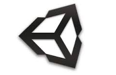

This tutorial is a live demo to show how to create a basic 2D side scroller game in Unity. This tutorial is mainly focused on beginners or people who haven't used Unity before.
Prerequitisites
- Install Visual Studio(Any version should work)
- Install Unity version 5.x from
- Download the images from the "Necessary Images" section
- Put the images in a folder on your desktop

Outline
- Create a new project
- Use images as sprites
- Create menu scene
- Convert images into animations
- Creating platforms
- Adding physics to every sprite in the environment
- Add player interaciton
- Add lose scene
- Specify lose situations
- Add win scene
- Specify win situations